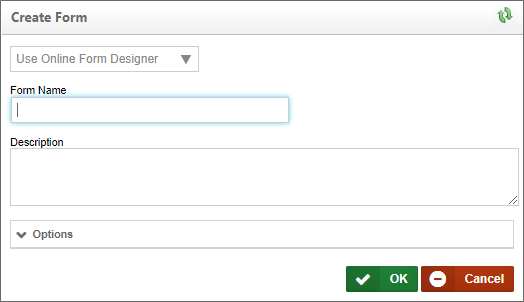
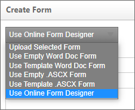
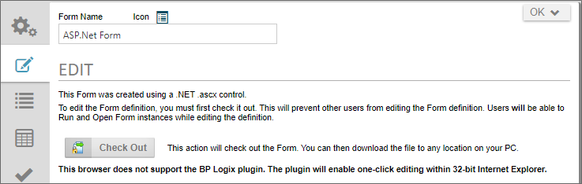
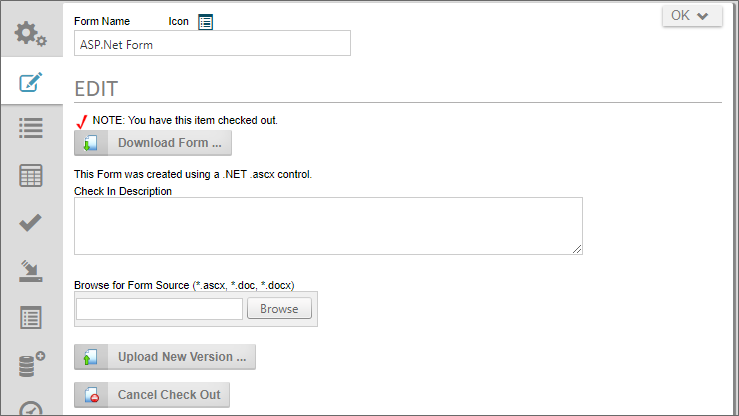

Creating ASP.NET Forms
This section will describe how to create and manage a Form, how to set the different variables associated with the Form form fields, and how to implement your custom scripting. You'll notice some differences from previous versions, such as no more Form page refresh. Forms now utilize AJAX which eliminates the page refresh when using events. Please keep in mind; this is for Form development using ASP.Net. We won't be using the Form builder for this section.
For more information about the Form and its properties please refer to the Implementers Reference Guide.
Adding a New Form Definition
Process Director can create new Forms as ASCX controls for you. Simply select Form Definition from the Create New dropdown menu to open the Create Form screen.

You have three options to create the ASCX control Form from the Create Form screen. You'll find the options in the dropdown at the top of the Create Form screen.

The three relevant options from which to choose are Upload Selected Form, Use Empty .ASCX Form, and Use Template .ASCX Form, all of which are discussed below.
Option 1: Upload Selected Form
To create a new Form definition, you'll have to create an .ascx page using your development tool. There is one line of code that must be included before you upload your new page. Please copy and paste the following in the first line of your page:
<%@ Control Language="C#" AutoEventWireup="false" Inherits="BPLogix.WorkflowDirector.SDK.bpFormASCX"%>
Once you've created your Form, you can upload it by selecting Form Definition from the Create New menu. You'll be presented with a page to browse and select your form file. You'll also have the option to provide a Name and Description for the Form definition.
Option 2: Use Empty .ASCX Form
If you use this option, Process Director will create an ASCX control that contains only basic code required for the control. The basic code consists only of the document declaration at the top of the page, and a <script> tag that contains the stubs for the common Process Director scripting methods.
Once you've created the control, you can Check Out the Form from the Edit tab of the Form definition, and begin working on it in your development environment.

Option 3: Use Template .ASCX Form
If you use this option, Process Director will create an ASCX control that contains a sample Form with some controls, formatting styles, and other HTML content, in addition to the page declaration and script stubs.
Again, you can edit this form in your development environment after checking out the form from the Edit tab of the Form definition.

Editing an ASP.NET Form #
ASP.NET Forms can, once created, be edited by navigating to the Edit tab of the Form definition.

Check out the ASCX form by clicking the Check Out button. Doing so will check out the form for editing and give you access to the editing features of the form definition.

To edit the form in Visual Studio, you can download it by clicking the Download Form button to download the form to your local computer. You can also stop the editing process at any time, and revert to the currently saved version of the form by clicking the Cancel Check Out button.
Once you're done editing the form, you can provide the appropriate text for the Check In Description, then click the Browse button to find the editied version of the form on your local computer and select it for upload. Once you've done so, click the Upload New Version button to upload and check in the edited form, which will replace the existing form with the newly edited version.